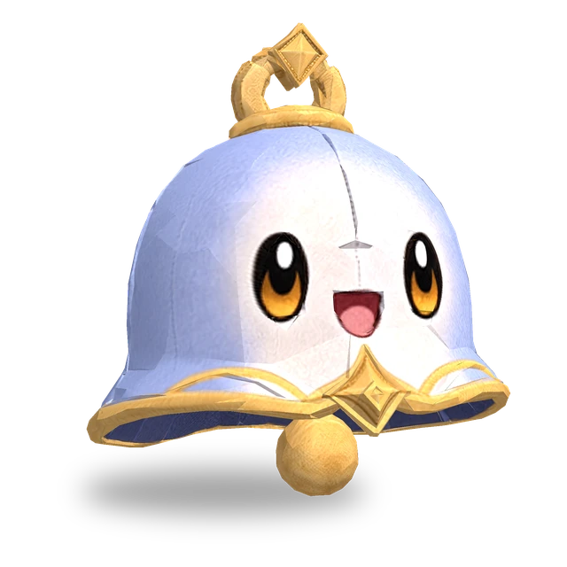

Dzwonienie
Przywraca wszystkim sojusznikom (zasięg: 2 pola, z wyjątkiem siebie) 50 pkt Many.
 3D
3D
| Lv. | Zdrowie | Atak | Moc magiczna |
|---|---|---|---|
| 1 | 300 | 20 | 20 |
| 2 | 345 | 23 | 23 |
| 3 | 397 | 26 | 26 |
| 4 | 456 | 30 | 30 |
| 5 | 525 | 35 | 35 |
| 6 | 603 | 40 | 40 |
| 7 | 694 | 46 | 46 |
| 8 | 798 | 53 | 53 |
| 9 | 918 | 61 | 61 |
| 10 | 1055 | 70 | 70 |
| 11 | 1214 | 81 | 81 |
Zdrowie, Atak i Moc magiczna rosną o 15% z każdym poziomem (do Lv.11).
No.075
Przywraca Manę pobliskim sojusznikom, a gdy sojusznik (także on sam) otrzyma osłabienie, usuwa z niego wszystkie osłabienia.
Przywraca wszystkim sojusznikom (zasięg: 2 pola, z wyjątkiem siebie) 50 pkt Many.
Gdy on sam lub sojusznik otrzyma osłabienie, usuwa z tego pluszaka wszystkie osłabienia. Nie działa przy osłabieniu, które kończy się, zanim dotrą jego nuty. Czas odnowienia: 5 s.